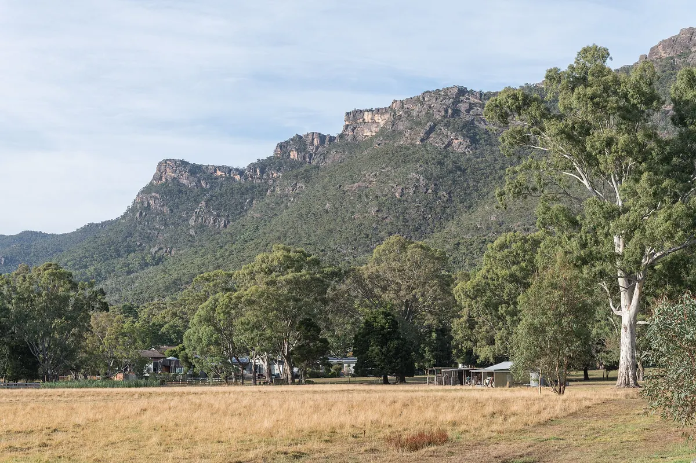
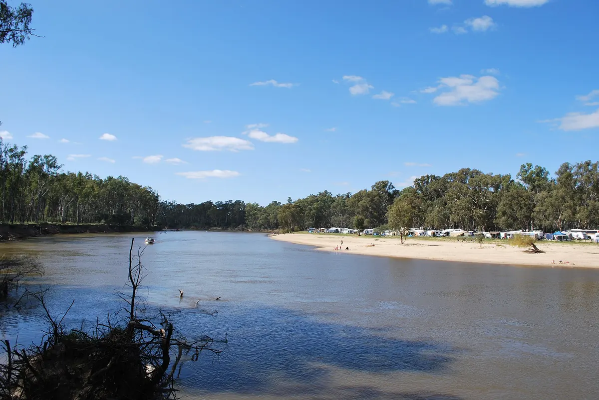
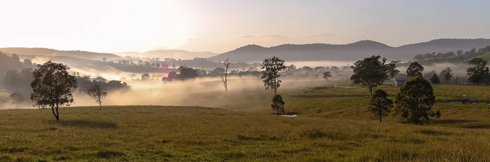

Festival guide, 2027
The best EDM festivals in Australia in 2027
Australian EDM festivals compared by state, sound and season, from New Year in Victoria to the Grampians in March, with the dates that are confirmed and the ones that are not.
A list meant for choosing.
The best EDM festivals Australia offers fall between November and March, and New Year's Eve is the peak, so the calendar runs the other way round from Europe's. Beyond the Valley and Pitch lead in Victoria, Strawberry Fields sits on the New South Wales border, and Ultra Australia comes through in autumn.
How this list was chosen.
A festival is on this list when these three things are true:
- Electronic music is the core of the programme, or a very large part of it.
- It has run in Australia recently, and it has either published its next edition or given no sign of stopping.
- It adds something the others lack: a different sound, state or way of spending the days.
DJ Mag's Top 100 Festivals for 2026, a reader poll, is used as a rough guide to profile. Beyond the Valley is 67th, Pitch is 84th and Ultra Australia is 86th.
Because the season crosses New Year, the table gives the year for every date, and marks any date not yet shown on the festival's own site.
Australian EDM festival dates for 2027 at a glance.
Several festivals here have an edition coming up in November 2026, before any 2027 date from their organisers. Those rows show the coming date, so you can plan the nearest one.
| Festival | Where | Next dates | Sound | Stay | Best for |
|---|---|---|---|---|---|
| Subsonic | Monkerai, NSW | 13 to 15 November 2026 | Electronic, four stages | Camping | A bush weekend |
| Strawberry Fields | Tocumwal, NSW | 20 to 22 November 2026 (listed) | Electronic | Camping | The Murray in spring |
| Beyond the Valley | Hesse, Victoria | 28 December 2026 to 1 January 2027 (sold out) | EDM and wider | Camping | The biggest New Year |
| Lost Paradise | Glenworth Valley, NSW | 28 December 2026 to 1 January 2027 (sold out) | Electronic and wider | Camping | New Year near Sydney |
| Dreamstate | Sydney; Melbourne | 6 and 7 February 2027 (reported) | Trance | City | One big night |
| Pitch | Moyston, Victoria | 5 to 9 March 2027 (sold out) | House, techno | Camping | A club-minded festival |
| Ultra Australia | Melbourne; Gold Coast | 17 and 18 April 2027 | Big-stage EDM | City | Ultra at home |
| Electric Island | Adelaide, Melbourne, Perth | Not announced (April in 2026) | Electronic | City | A waterfront day |
| Knockout Outdoor | Sydney | Not announced (3 October in 2026) | Hardstyle, hardcore | City | Hard dance |
What is the biggest EDM festival in Australia?
Beyond the Valley is the biggest, with 40,000 people across four days at its sold-out 10th edition, the highest attendance figure on this list. Its organiser, Untitled Group, calls it Australia's largest multi-day festival.
Beyond the Valley runs from 28 December to 1 January at Barunah Plains in Hesse, 126 km west of Melbourne, for ages 18 and over, with camping on site. It is presented by Untitled Group and triple j. Its bill goes wider than EDM, with John Summit, Black Eyed Peas and Skepta on the coming edition, and tickets have sold out.
Lost Paradise is its New South Wales counterpart, on the same dates. It is held at Glenworth Valley, on 300 acres an hour north of Sydney, with camping for ages 18 and over, and it has also sold out. It sits closer to a general music festival, with electronic acts as a large part of the bill. The Australian section of the New Year's Eve festivals guide compares the summer's other options.
What are the biggest raves in Australia?
The biggest Australian raves are city events on showgrounds, racecourses and beaches, rather than camping festivals. Dreamstate, Knockout Outdoor and Electric Island are the three to know.
Dreamstate
Dreamstate Australia is reported for Sydney Showground on 6 February 2027 and Flemington Racecourse in Melbourne on 7 February 2027, with Tiësto headlining on a trance set.
Knockout Outdoor
Knockout Outdoor is the hard-dance event, with hardstyle and hardcore at ENGIE Stadium in Sydney. Its seventh year ran on 3 October 2026.
Electric Island
Electric Island ran in April 2026 in Adelaide, Melbourne and Perth, on the waterfront in Glenelg and Cottesloe. It has not confirmed 2027.
Melbourne and Victoria.
Most of this list is within a few hours of Melbourne. The biggest EDM festival Melbourne has on its doorstep is Beyond the Valley, and it and Pitch both sit in western Victoria. Rainbow Spirit, on 5 to 8 March 2027 in central Victoria, is the psytrance option, and it is covered in the psytrance guide with Wild Horses.
Melbourne's club nights are worth hearing before you go. This set is the German DJ Clara Cuvé at Intercell in the city in 2025, filmed by Intercell.
Which festivals are for house and techno?
Pitch is the first choice for house and techno in Australia, and Strawberry Fields and Subsonic are the bush alternatives.
Pitch, Victoria
Pitch Music and Arts is on 5 to 9 March 2027 at Moyston, at the foot of the Grampians, for its 10th edition, and tickets have sold out, with a Tixel waitlist on the festival's site. It suits anyone who wants a smaller camping festival with a club-minded programme, and it falls well after the New Year rush.

Strawberry Fields, New South Wales
Strawberry Fields is listed for 20 to 22 November 2026 at The Wildlands on Tuppal Road near Tocumwal, close to the Murray. Tickets for 2026 were sold by ballot, and the organisers have not yet confirmed 2027.

Subsonic, New South Wales
Subsonic is on 13 to 15 November 2026 at Riverwood Downs in Monkerai, with more than 120 artists on four stages. The 2027 dates have not been announced.

Is Ultra back in Australia?
Yes. The next Ultra festival Australia hosts is on 17 and 18 April 2027, at Flemington Racecourse in Melbourne and Broadwater Parklands on the Gold Coast, the same two-city format as 2026. It ranks 86th in DJ Mag's list. For the parent festival, see the Ultra guide.
Not on this list, and why.
- Wild Horses. It is a small bush doof that leans towards psytrance, so it sits in the psytrance guide.
- hypersonic. Its organisers cancelled the Melbourne and Sydney shows due in November 2026, and no return has been announced.
- Listen Out. It paused in 2025 for smaller Listen Out Presents parties, and no return of the festival has been announced.
- General music festivals. Big mixed bills carry electronic acts as one part of the programme, so they fall outside the first test.
How to choose.
Decide on the season first. November has Strawberry Fields and Subsonic. New Year has Beyond the Valley and Lost Paradise. February has Dreamstate, March has Pitch, and April has Ultra Australia.
Then choose how you want to spend it. Beyond the Valley has the largest crowd, Pitch is the smaller house and techno weekend, and Dreamstate is one big night.
Beyond the Valley, Lost Paradise and Pitch have all sold out, so resale is the only way in. Heat and fire rules can change a bush festival at short notice, so read the festival's own advice before you travel.
For festivals further north, see the best electronic music festivals in Asia.
Australian EDM festivals FAQ.
What is the most popular festival in Australia?
Among dance-led festivals, it is Beyond the Valley, which drew 40,000 people to Barunah Plains at its last edition and sold out the next one in presale. DJ Mag's reader poll places it 67th.
Where is Pitch Music and Arts held?
In Moyston, western Victoria. The next edition is in March 2027 and is already sold out.
When is Ultra Australia in 2027?
Ultra Australia is on 17 and 18 April 2027, split between Melbourne and the Gold Coast. Presale sign-up is open on the festival's site.
Sources.
- Dates from each festival's own site: Beyond The Valley, Lost Paradise, Pitch, Subsonic, Ultra Australia, and the Rainbow Spirit ticket page.
- Listed or reported dates: Strawberry Fields (NSW Government events), Dreamstate (Sydney Showground, Noise11), Electric Island (The Note), Knockout Outdoor (That Festival Site).
- hypersonic cancellation: hypersonicfestival.au.
- Beyond The Valley attendance: The Music Network and Rolling Stone Australia.
- Poll ranks: DJ Mag: Top 100 Festivals 2026.
Continue reading
Read next.
 Rave spots~8 min read
Rave spots~8 min readBerghain: Panorama Bar, Sound and Residents
Berghain explained: the former power station, Panorama Bar upstairs, Halle am Berghain, the Kantine, and the Ostgut Ton label.
Read article → Rave spots~11 min read
Rave spots~11 min readBest Clubs in NYC: Nightclubs for House and Techno
Nowadays, Basement, Public Records, Good Room and Elsewhere: the best clubs in NYC for house and techno now, and the history from the Loft to Output.
Read article → Rave spots~7 min read
Rave spots~7 min readBest Clubs in Tokyo: WOMB, Contact and the Ban on Dancing
WOMB, Contact, Vent and Circus Tokyo: the best clubs in Tokyo for house, techno and bass music, and the 68-year law against dancing that shaped them.
Read article → Rave spots~6 min read
Rave spots~6 min readBest Clubs in Budapest: A38, Instant-Fogas and Turbina
A38's converted cargo ship, the seven rooms of Instant-Fogas and Turbina's techno nights: the best clubs in Budapest now, and the ruin bars several grew out of.
Read article →